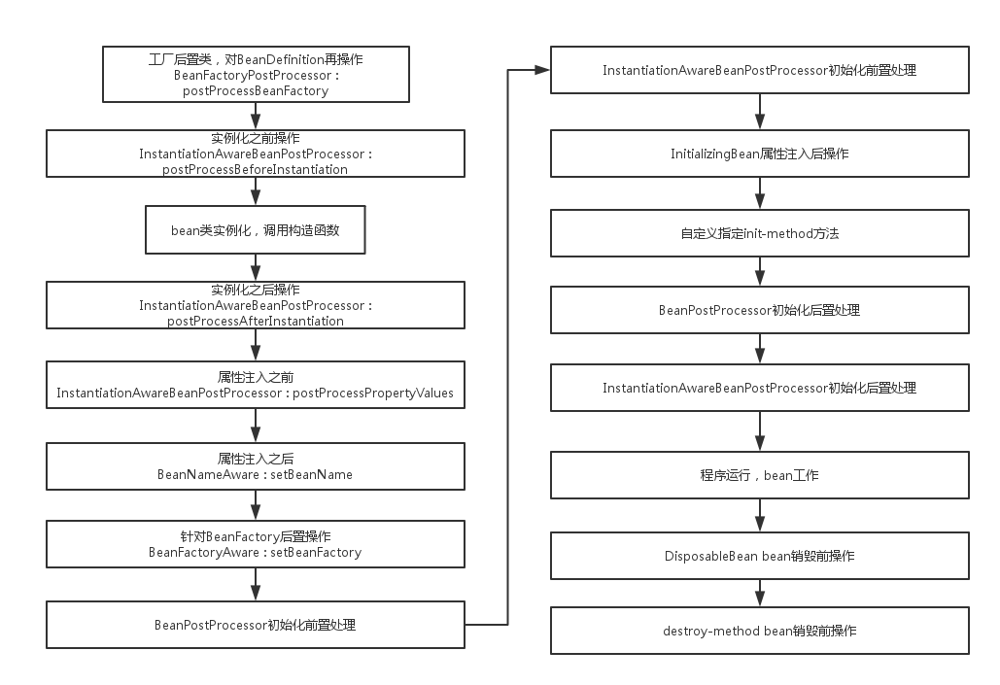

SpringIoC
IoC容器
ioc(Inverse of Control)是Spring容器的内核.控制反转即某一接口具体实现类的选择控制权从调用类移除,交由第三方决定,即由Spring容器借由bean配置来控制.
Spring提供了两种类型的容器:
- Beanfactory:创建管理各个类的对象.
- ApplicationContext:由benefactory派生来,面向spring的所有开发者,几乎所有场合都可以使用,而非使用底层的Beanfactory.
使用beanfactory
BeanFactory主要实现方法是XmlBeanfactory,但现在已经是被废弃的方法,不建议使用,使用XmlBeanDefinitionReader与DefaultListableBeanFactory.
XmlBeanDefinitionReader通过Resource装载Spring配置信息,启动IoC容器,,然后就可以通过BeanFactory#getBean(ByName)来从IoC容器中获取Bean.
创建bean:
1 | package com.Beanfactory; |
配置bean:
1 | <?xml version="1.0" encoding="UTF-8"?> |
测试:
1 | package com.Beanfactory; |
使用ApplicationContext
ApplicationContext主要是实现类是FileSystemXmlApplicationContext和ClassPathXmlApplicationContext.前者默认从文件系统装载配置文件,后者默认从类路径加载配置文.1
2
3ApplicationContext初始化与Beanfactory类似:
ApplicationContext context=new FileSystemXmlApplicationContext("/src/main/resources/com/ApplicationContext/Bean.xml");
//实际访问路径是/home/watermelon/JavaWebDemo/helloworld/src/main/resources/com/ApplicationContext/Bean.xml
WebApplicatpnContext
WebApplication是专门为web应用准备的,他允许相对于web更目录的路径加载配置文件的信息完成初始工作.从WebApplicationContext中可以获得ServletContext的引用,整个web应用上下文对象都可以将作为属性放置到ServletContext中,以便web应用环境可以访问Spring应用上下文.
web应用下bean的属性由非web应用下的singleton,prototype增加了request,session,global session.
可以通过以下语句获得WebApplicationContext:1
2
3
4WebApplicationContext context=(WebApplicationContext)servletContext.getAttribute(WebApplicationContext.ROOT_WEB_APPLICATION_CONTEXT_ATTRIBUTE);
//或者
WebApplicationContext webApplicationContext=ContextLoader.getCurrentWebApplicationContext();
ServletContext servletContext = webApplicationContext.getServletContext();
Bean
定义
bean 的对象是构成应用程序的支柱也是由 Spring IoC 容器管理的。bean 是一个被实例化，组装，并通过 Spring IoC 容器所管理的对象。
bean的属性:
- class:这个属性是强制性的，并且指定用来创建 bean 的 bean 类。
- name:这个属性指定唯一的 bean 标识符。在基于 XML 的配置元数据中，你可以使用 ID 和/或 name 属性来指定 bean 标识符。
- scope:这个属性指定由特定的 bean 定义创建的对象的作用域。
- constructor-arg:用来注入依赖关系的。
- properties:用来注入依赖关系的，并会在接下来的章节中进行讨论。
- autowiring mode:用来注入依赖关系的，并会在接下来的章节中进行讨论。
- lazy-initialization mode:延迟初始化的 bean 告诉 IoC 容器在它第一次被请求时，而不是在启动时去创建一个 bean 实例。
- initialization:在 bean 的所有必需的属性被容器设置之后，调用回调方法。
- destruction:当包含该 bean 的容器被销毁时，使用回调方法.
作用域
- singleton:该作用域将 bean 的定义的限制在每一个 Spring IoC 容器中的一个单一实例(默认)。
- prototype:该作用域将单一 bean 的定义限制在任意数量的对象实例。
- request:该作用域将 bean 的定义限制为 HTTP 请求。只在 web-aware Spring ApplicationContext 的上下文中有效。
- session:该作用域将 bean 的定义限制为 HTTP 会话。 只在web-aware Spring ApplicationContext的上下文中有效。
- global-session:该作用域将 bean 的定义限制为全局 HTTP 会话。只在 web-aware Spring ApplicationContext 的上下文中有效。
Singleton与prototype的区别:
在SpringIoC容器中,singleton类型的bean只会实例化一次,所以只有一个实例,当你以后getBean()时,得到的bean都是指向同一个实例.当你改变了其中的某些属性,则以后获得的bean都是被改变了的.
而prototype作用域的bean在每次获取时都会被实例化,则每次获得的都是不同的实例,当你改变了其中一个获得的实例,并不会对以后geaBean()有影响.
##3 生命周期

BeanFactory中的bean生命周期比ApplicationContext中的少调用了第一个BeanFactorPostProcessor
一个实例:
创建一个POJO,实现了BeanFactoryAware, BeanNameAware, InitializingBean, DisposableBean.1
2
3
4
5
6
7
8
9
10
11
12
13
14
15
16
17
18
19
20
21
22
23
24
25
26
27
28
29
30
31
32
33
34
35
36
37
38
39
40
41
42
43
44
45
46
47
48
49
50
51
52
53
54
55
56
57
58
59
60
61
62
63
64
65
66
67
68
69
70
71
72
73
74
75
76
77
78
79
80
81
82
83
84
85
86
87package com.bean_lifetime;
import org.springframework.beans.BeansException;
import org.springframework.beans.factory.BeanFactory;
import org.springframework.beans.factory.BeanFactoryAware;
import org.springframework.beans.factory.BeanNameAware;
import org.springframework.beans.factory.DisposableBean;
import org.springframework.beans.factory.InitializingBean;
public class Car implements BeanFactoryAware, BeanNameAware, InitializingBean, DisposableBean {
private String brand;
private String color;
private int maxSpeed;
private String name;
private BeanFactory beanFactory;
private String beanName;
public Car() {
System.out.println("调用Car()构造函数。");
}
public String getBrand() {
return brand;
}
public void setBrand(String brand) {
System.out.println("调用setBrand()设置属性。");
this.brand = brand;
}
public String getColor() {
return color;
}
public String toString() {
return "brand:" + brand + "/color:" + color + "/maxSpeed:"+ maxSpeed;
}
public void setColor(String color) {
this.color = color;
}
public int getMaxSpeed() {
return maxSpeed;
}
public void setMaxSpeed(int maxSpeed) {
this.maxSpeed = maxSpeed;
}
public void introduce(){
System.out.println("introduce:"+this.toString());
}
// BeanFactoryAware接口方法
public void setBeanFactory(BeanFactory beanFactory) throws BeansException {
System.out.println("调用BeanFactoryAware.setBeanFactory()。");
this.beanFactory = beanFactory;
}
// BeanNameAware接口方法
public void setBeanName(String beanName) {
System.out.println("调用BeanNameAware.setBeanName()。");
this.beanName = beanName;
}
// InitializingBean接口方法
public void afterPropertiesSet() throws Exception {
System.out.println("调用InitializingBean.afterPropertiesSet()。");
}
// DisposableBean接口方法
public void destroy() throws Exception {
System.out.println("调用DisposableBean.destory()。");
}
public void myInit() {
System.out.println("调用myInit()，将maxSpeed设置为240。");
this.maxSpeed = 240;
}
public void myDestory() {
System.out.println("调用myDestroy()。");
}
}
实现BeanPostProcessor:1
2
3
4
5
6
7
8
9
10
11
12
13
14
15
16
17
18
19
20
21
22
23
24
25
26
27
28
29
30
31package com.bean_lifetime;
import org.springframework.beans.BeansException;
import org.springframework.beans.factory.config.BeanPostProcessor;
//在该类中可对bean的属性进行检查,执行相应的"查漏补缺"
public class MyBeanPostProcessor implements BeanPostProcessor{
public Object postProcessAfterInitialization(Object bean, String beanName) throws BeansException {
if(beanName.equals("car")){
Car car = (Car)bean;
if(car.getMaxSpeed() >= 200){
System.out.println("调用MyBeanPostProcessor.postProcessAfterInitialization()，将maxSpeed调整为200。");
car.setMaxSpeed(200);
}
}
return bean;
}
public Object postProcessBeforeInitialization(Object bean, String beanName) throws BeansException {
if(beanName.equals("car")){
Car car = (Car)bean;
if(car.getColor() == null){
System.out.println("调用MyBeanPostProcessor.postProcessBeforeInitialization()，color为空，设置为默认黑色。");
car.setColor("黑色");
}
}
return bean;
}
}
实现InstantiationAwareBeanPostProcessor:1
2
3
4
5
6
7
8
9
10
11
12
13
14
15
16
17
18
19
20
21
22
23
24
25
26
27
28
29
30
31
32
33
34
35
36
37
38
39
40
41
42
43package com.bean_lifetime;
import java.beans.PropertyDescriptor;
import org.springframework.beans.BeansException;
import org.springframework.beans.PropertyValues;
import org.springframework.beans.factory.config.InstantiationAwareBeanPostProcessorAdapter;
public class MyInstantiationAwareBeanPostProcessor extends InstantiationAwareBeanPostProcessorAdapter{
//接口方法,在实例化bean前调用
public Object postProcessBeforeInstantiation(Class beanClass, String beanName) throws BeansException {
if("car".equals(beanName)){//只对容器中 car 处理
System.out.println("MyInstantiationAwareBeanPostProcessor.postProcessBeforeInstantiation");
}
return null;
}
//接口方法,在实例化bean后调用
public boolean postProcessAfterInstantiation(Object bean, String beanName) throws BeansException {
if("car".equals(beanName)){//只对容器中 car 处理
System.out.println("InstantiationAwareBeanPostProcessor.postProcessAfterInstantiation");
}
return true;
}
//在设置某个属性的时候调用
public PropertyValues postProcessPropertyValues(
PropertyValues pvs, PropertyDescriptor[] pds, Object bean, String beanName)
throws BeansException {
if("car".equals(beanName)){//只对容器中 car 处理,只处理某个特定属性
System.out.println("InstantiationAwareBeanPostProcessor.postProcessPropertyValues");
}
return pvs;
}
public Object postProcessBeforeInitialization(Object bean, String beanName) throws BeansException {
return bean;
}
public Object postProcessAfterInitialization(Object bean, String beanName) throws BeansException {
return bean;
}
}
实现BeanFactoryPostProcessor(仅ApplicationContext中的bean才有的生命周期):1
2
3
4
5
6
7
8
9
10
11
12
13
14
15
16
17
18package com.bean_lifetime;
import org.springframework.beans.BeansException;
import org.springframework.beans.factory.config.BeanDefinition;
import org.springframework.beans.factory.config.BeanFactoryPostProcessor;
import org.springframework.beans.factory.config.ConfigurableListableBeanFactory;
//仅在ApplicationContext的bean生命周期中
public class MyBeanFactoryPostProcessor implements BeanFactoryPostProcessor{
public void postProcessBeanFactory(ConfigurableListableBeanFactory bf) throws BeansException {
//更改bean的属性
BeanDefinition bd = bf.getBeanDefinition("car");
bd.getPropertyValues().addPropertyValue("brand", "奇瑞QQ");
System.out.println("调用MyBeanFactoryPostProcessor.postProcessBeanFactory()！");
}
}
然后的分别用Beanfactory与ApplicationContext容器装载bean:
ApplicationContext与Beanfactory有一个很大的区别在于:前者可以利用java反射机制自动识别配置文件中定义的BeanPostProcessor,InstantiationAwareBeanPostProcessor的BeanFactoryPostProcessor,并将他们注册到应用上下文中.而后者需要手工调用addBeanPostProcessor()方法,所以推荐使用APplicationContext容器来装载Bean.
BeanFactory:1
2
3
4
5
6
7
8
9
10
11
12
13
14
15
16
17
18
19
20
21
22
23
24
25
26
27
28
29
30
31
32
33
34
35
36
37
38
39
40
41
42
43
44
45
46
47
48
49
50
51
52
53
54
55
56
57
58
59
60
61
62
63
64
65
66
67package com.bean_lifetime;
import org.springframework.beans.factory.BeanFactory;
import org.springframework.beans.factory.config.ConfigurableBeanFactory;
import org.springframework.beans.factory.support.DefaultListableBeanFactory;
import org.springframework.beans.factory.xml.XmlBeanDefinitionReader;
import org.springframework.core.io.ClassPathResource;
import org.springframework.core.io.Resource;
public class BeanLifeCycle_beanfactory {
private static void LifeCycleInBeanFactory(){
//①下面两句装载配置文件并启动容器
Resource res = new ClassPathResource("com/bean_lifetime/Bean.xml");
BeanFactory bf= new DefaultListableBeanFactory();
XmlBeanDefinitionReader reader = new XmlBeanDefinitionReader((DefaultListableBeanFactory)bf);
reader.loadBeanDefinitions(res);
//②向容器中注册MyBeanPostProcessor后处理器
((ConfigurableBeanFactory)bf).addBeanPostProcessor(new MyBeanPostProcessor());
//③向容器中注册MyInstantiationAwareBeanPostProcessor后处理器
((ConfigurableBeanFactory)bf).addBeanPostProcessor(
new MyInstantiationAwareBeanPostProcessor());
//④第一次从容器中获取car，将触发容器实例化该Bean，这将引发Bean生命周期方法的调用。
Car car1 = (Car)bf.getBean("car");
car1.introduce();
car1.setColor("红色");
//⑤第二次从容器中获取car，直接从缓存池中获取
Car car2 = (Car)bf.getBean("car");
//⑥查看car1和car2是否指向同一引用
System.out.println("car1==car2:"+(car1==car2));
//⑦关闭容器
((DefaultListableBeanFactory)bf).destroySingletons();
}
public static void main(String[] args) {
LifeCycleInBeanFactory();
}
}
/*
输出
MyInstantiationAwareBeanPostProcessor.postProcessBeforeInstantiation
调用Car()构造函数。
InstantiationAwareBeanPostProcessor.postProcessAfterInstantiation
InstantiationAwareBeanPostProcessor.postProcessPropertyValues
调用setBrand()设置属性。
调用BeanNameAware.setBeanName()。
调用BeanFactoryAware.setBeanFactory()。
调用MyBeanPostProcessor.postProcessBeforeInitialization()，color为空，设置为默认黑色。
调用InitializingBean.afterPropertiesSet()。
调用myInit()，将maxSpeed设置为240。
调用MyBeanPostProcessor.postProcessAfterInitialization()，将maxSpeed调整为200。
introduce:brand:奔驰/color:黑色/maxSpeed:200
car1==car2:true
调用DisposableBean.destory()。
调用myDestroy()。
Process finished with exit code 0
*/
ApplicationContext:
1 |
|
Xml配置文件:1
2
3
4
5
6
7
8
9<?xml version="1.0" encoding="UTF-8"?>
<beans xmlns="http://www.springframework.org/schema/beans"
xmlns:xsi="http://www.w3.org/2001/XMLSchema-instance" xmlns:p="http://www.springframework.org/schema/p"
xsi:schemaLocation="http://www.springframework.org/schema/beans http://www.springframework.org/schema/beans/spring-beans.xsd">
<bean id="car" class="com.bean_lifetime.Car" init-method="myInit" destroy-method="myDestory" p:brand="奔驰" p:maxSpeed="200"/>
<bean id="myBeanPostProcessor" class="com.bean_lifetime.MyBeanPostProcessor"/> <!--注册bean后处理器-->
<bean id="myBeanFactoryPostProcessor" class="com.bean_lifetime.MyBeanFactoryPostProcessor"/> <!--注册工厂后处理器-->
</beans>
待办
对于Java反射机制还需仔细了解